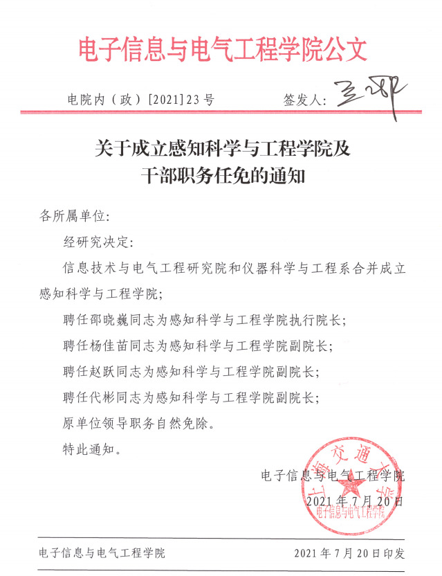

lz新生，分流炸了，687/718，估摸着智能感知，生医工二选一，运气好也许能蹭进电气 
看了眼各位前辈们的帖子，都说智能感知是测控换汤不换药，但是我看了眼培养计划，专业课部分智能感知好像确实多出来很多不一样的课，比如人工智能理论和计算机视觉。请问这是否意味着智能感知相比之前的测控还是强一点的？
真心求教，也欢迎各位测控前辈解惑。感激不尽！！
（以下两图，左侧是21年测控培养方案，右侧是22年智能感知）

lz新生，分流炸了，687/718，估摸着智能感知，生医工二选一，运气好也许能蹭进电气 
看了眼各位前辈们的帖子，都说智能感知是测控换汤不换药，但是我看了眼培养计划，专业课部分智能感知好像确实多出来很多不一样的课，比如人工智能理论和计算机视觉。请问这是否意味着智能感知相比之前的测控还是强一点的？
真心求教，也欢迎各位测控前辈解惑。感激不尽！！
（以下两图，左侧是21年测控培养方案，右侧是22年智能感知）
几乎是同一个专业（楼下有人纠正说不是），测控VS智能感知，不得不感慨语言的奥妙，你可以问问你直系学长的专业名称是不是测控。
是我就无脑生医工了
是的，感知学院我印象中就是测控的前身

听说生医工要学很多生物有关的，而且要背的也很多  一直对生物就不太感兴趣，而且对于这种有很多要背的也有点抵触
一直对生物就不太感兴趣，而且对于这种有很多要背的也有点抵触 
几乎个啥？这个专业刚建立，哪来的师兄？另外专业培养方案都不一样，你从哪得出一个”一样“的结论？好歹是上交的学生，多少带点逻辑和证据再来言之凿凿地解答好不？
这个领域的入门门槛是一篇顶会，上一门水课可以理解为p用没有


毕业证上只有智能感知工程这个名字，难不成你用人单位还没事干去看你的一级学科？此外，你要是人工智能学的好，你就是学养蚕专业出身，也可以干掉那帮子IT专业出身的学生。关键不是你的一级学科，而是你的能力和素养。当初申请智能感知专业就是考虑到一堆人会说测控换了个皮，所以从头到尾全部换掉了，连内核都重建。为的就是彻底与测控技术专业区别开来。
老师，有些单位（国企或者选调）卡专业很死的，名字或者代码不匹配（差一个字都不行）不让我报。
其实这样做还是有漏洞，应该先把测控招生规模减半，然后另开智能感知学院。然后过一两年测控停招。
这招金蝉脱壳应该很好吧
金教授，智感那么好为什么还没学生愿意去呀 我深感痛心
我深感痛心
你去了不就有人去了吗，快去
这需要你用智能 感知一下究竟是不是
其实测控也不差吧，找个好工作还是不难的
确实比核工好
行业兴衰对专业的影响太大了
说不定将来加大核电建设力度了，核工待遇还可以提升
我们只是为了尽可能让学生分流前不被误导，仅此而已。每当看到有人说智能感知就是测控专业换了个皮，我们觉得有必要澄清一次。以往的测控如何，我无法去左右，但是智能感知在我的领导下，我会给所有进这个专业的学生承诺：新专业会给你们重新塑造自我的机会。我们的羽嘉计划和特殊培养模式，必然会让进入新专业的学生不会后悔。最后一句话：做不到这点，我主动辞掉自己的职务。

{kind=link}
{kind=link}